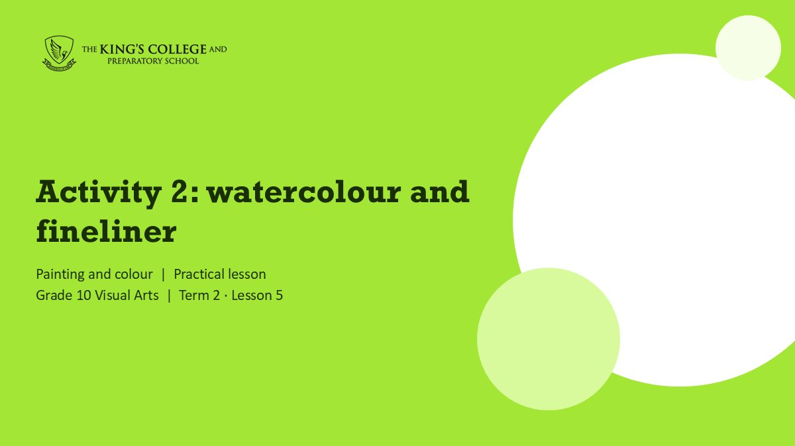

Term 2 · Lesson 5 · Practical lesson
Activity 2: The Mouth and the Ear
Start Here
Today I Will
- Understand the structure of the mouth and ear
- Draw the mouth and ear as forms with tone
- Place all the features on a proportion map of the head
Think first
Why is your upper lip usually darker than your lower lip?
Words to Know
| Word | Meaning |
|---|---|
| Proportion | The size of each feature compared to the others and to the whole head. |
| Philtrum | The small groove between the base of the nose and the top lip. |
| Lobe | The soft, rounded bottom part of the ear. |
| Head proportions | Guidelines that show where the features usually sit on an average head. |
| Centre line | A vertical line down the middle of the face that keeps the features aligned. |
Slides

Notes
The structure of the mouth and the ear; placing all four features correctly on the head.
The Mouth and the Ear
- Upper lip: Usually darker, as it faces down away from light. It has a central bow under the philtrum.
- Lower lip: Fuller and lighter, as it faces up; a shadow often sits below it.
- The line between the lips: The darkest line of the mouth. Vary its thickness and fade it at the corners.
- The ear: Think of a shell shape: an outer rim, an inner curve and a hollow leading inwards.
- The lobe: Soft and rounded at the bottom; shade it gently, never with a hard outline.
Placing the Features on the Head (Front View)
- Egg and centre line: Draw an egg shape for the head and a vertical centre line.
- Eyes at halfway: Draw a line halfway down: the eyes sit on it, about one eye-width apart.
- Nose: The base of the nose sits about halfway between the eye line and the chin.
- Mouth: The line between the lips sits about one third of the way from the nose to the chin.
- Ears: The tops of the ears line up roughly with the brows, and the lobes with the base of the nose.
Remember
The eyes sit halfway; the rules give you the start, the mirror gives you the likeness.
Practical
You need: Hand mirror, A3 cartridge paper, HB, 2B and 4B pencils, putty eraser, VJ
Mouth, Ear and a Proportion Map
- Using the mirror, draw your mouth in three stages, ending with full tone.
- Draw one ear in two stages: simple shell shape, then inner forms and tone.
- On the rest of the page, draw an egg shape and lightly mark the proportion lines.
- Place all the features on the map, using your eye and nose studies and your Activity 1 map as reference.
- Measure your own face in the mirror and note one way it differs from the average.
- Annotate in your VJ: the proportion rules and your own differences.
Test Yourself
- Where are the eyes on an average adult head, front view?
- Why is the upper lip usually darker than the lower lip?
- Which features line up with the top and bottom of the ears?
Show answers
1. About halfway down the head. 2. It faces downwards, away from overhead light, while the lower lip faces up and catches light. 3. Roughly the brows at the top and the base of the nose at the bottom.
Finished Early?
Quick proportion map
Place the features using the proportion lines.
- Draw an egg shape and a vertical centre line in your VJ.
- Mark the eye line halfway down.
- Mark the base of the nose halfway between the eyes and the chin, and the mouth a third of the way from nose to chin.
- Add the ears from the brows to the base of the nose.